Advance Tutorial 02: Global Loop Animation
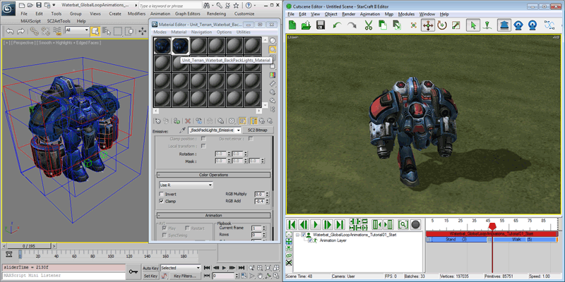In StarCraft II, a Global Loop Animation is a special type of SplitBody Animation that is automatically started by a model as soon as it is created in the game. The animation would play uninterruptedly on top of other animations for the lifespan of the unit, doodads, or building the model represents. This type of animation is used in the game for constantly looping animations such as the rotating rotors of the Banshee. We will learn how to set up a Global Loop Animation in this tutorial by adding a blinking light effect to the WaterBat's backpack.
Getting Started
-
Open 'Waterbat_GlobalLoopAnimation_Tutorial01_Start.max'. It contains an animated Waterbat with the addition of a mesh and material for the blinking backpack light.
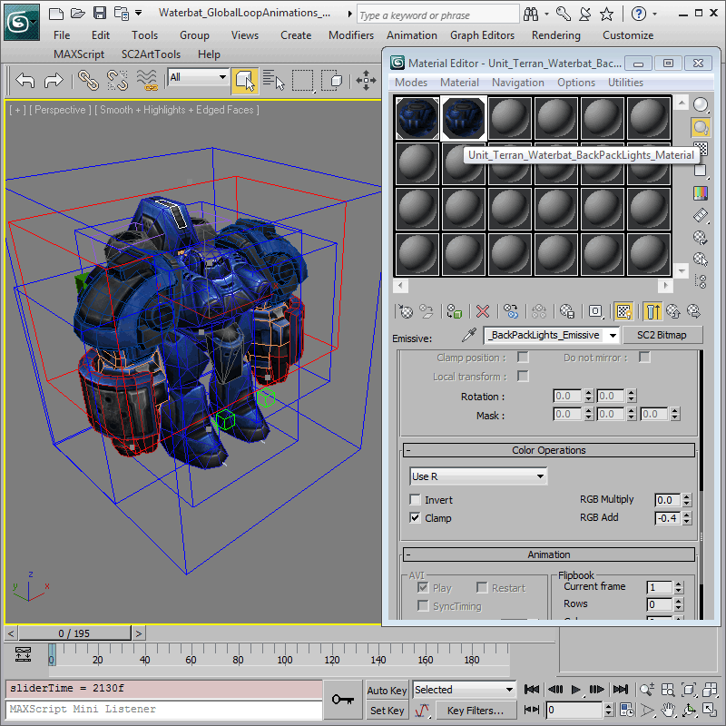
Add a Global Loop Animation
As mentioned, all Global Loop Animations found for a model are started as soon as the model is created in the game. The engine is able to identify this type of animation by Animation Name. We will start by creating an animation with the name 'GL_Stand', which is reserved for Global Loop Animation.
-
Open the Anim Props Floater and press 'New'. On the pop-up, add an animation called 'GL_Stand' with 'start' at 2100 and 'length' of 30.
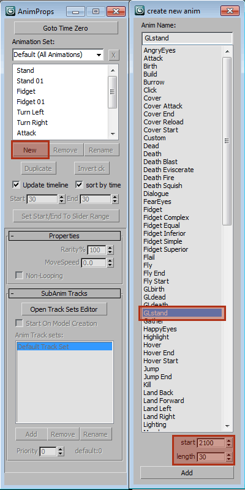
Animating the Blinking Light
For the blinking light effect, we will be using the 'RGB Multiply' track of the Emissive texture in 'Unit_Terran_Waterbat_BackPackLights_Material'. Let's animate that track.
-
Select the new 'GL_Stand' animation from the list to set the 3ds Max animation range to the range of the 'GL_Stand'- Start at 2100 and End at 2130.
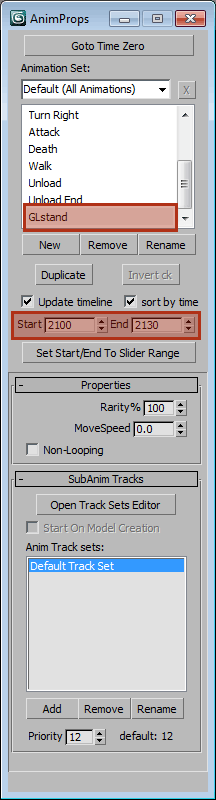 -
Open the Material Editor and select the 'Unit_Terran_Waterbat_BackPackLight_Material', which should be in the second slot.
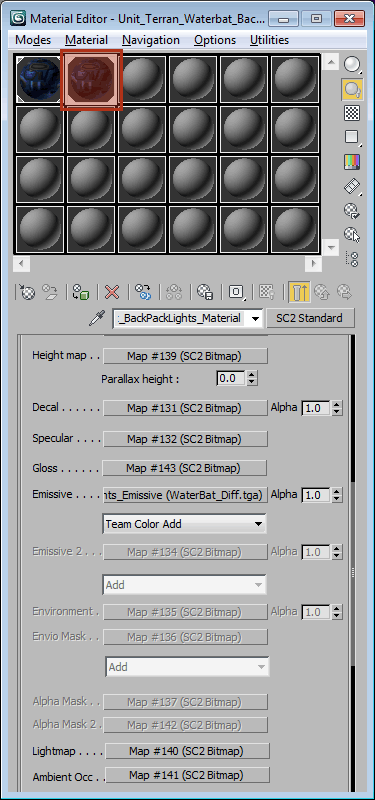 -
Click on the Emissive texture to select it. The UI should now read 'Emissive: Unit_Terran_Waterbat_BackPackLights_Emissive', and the rollout should be updated to show properties of the 'Unit_Terran_Waterbat_BackPackLights_Emissive' texture.
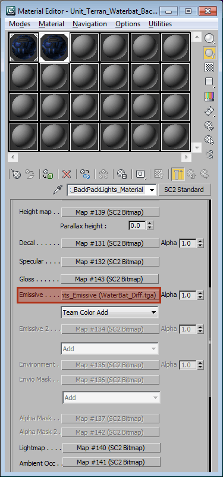 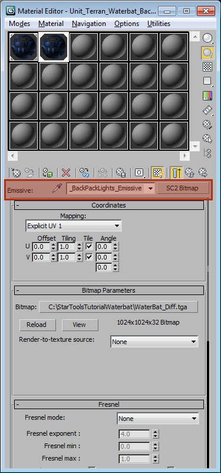 -
In the rollout, find the 'RGB Multiply' property and create a new key for it at frame 2100 with a value of 0.
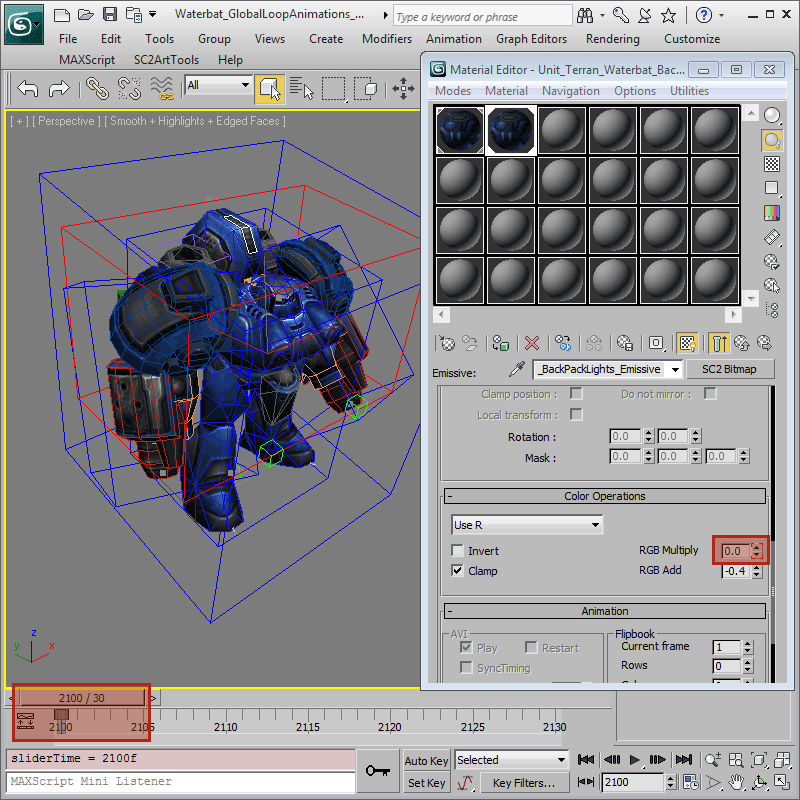 -
Create another key for the 'RGB Multiply' property at frame 2115 with a value of 4.
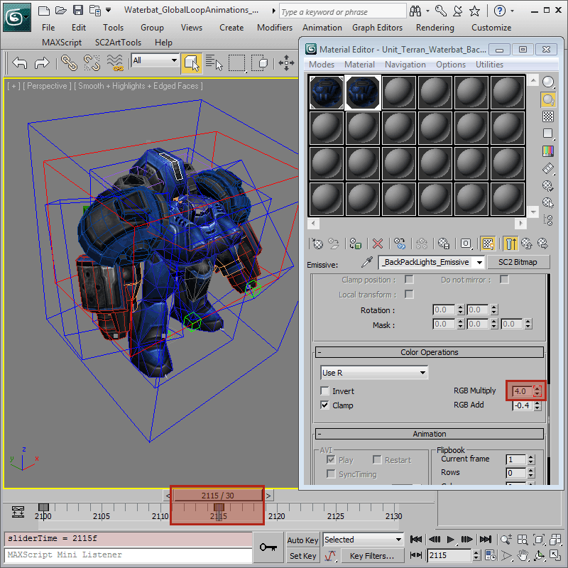 -
Create a final key for the 'RGB Multiply' property at frame 2130 with a value of 0 again.
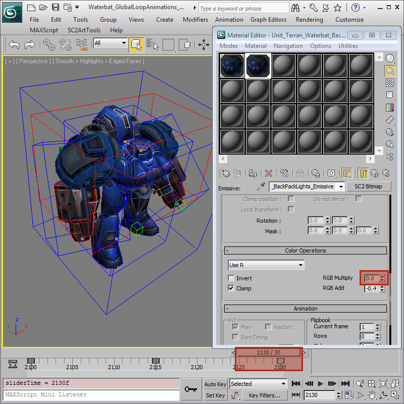
Create a Track Set
In order for Global Loop Animations to play on top of other animations, their Animation Priorities is higher than most other animations by default. For that reason, any Global Loop Animation should also be a SplitBody Animation. Otherwise, a model would be locked on playing the Global Loop Animation for all tracks on creation and no subsequent animation added would play on any track. In this case, the 'GL_Stand' needs to be turned into a SplitBody Animation, and we will start by creating a new track set.
-
Open the Track Sets Editor, press the 'Add a Track Set' button to add a new track set and then name it 'BackpackGlow'.
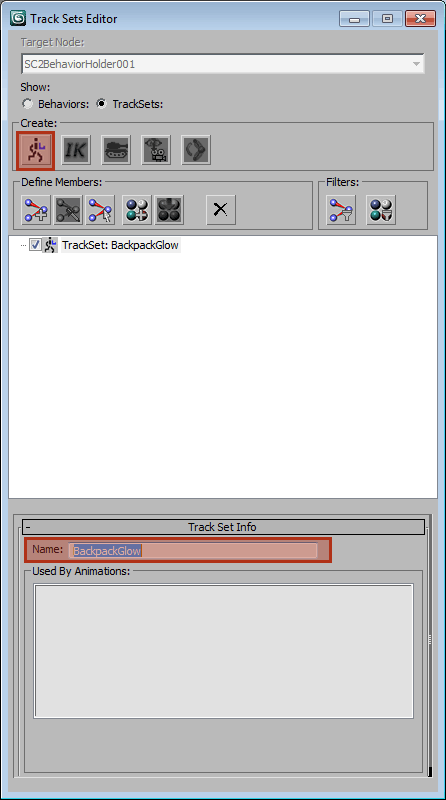 -
In the Material Editor, make sure the 'Unit_Terran_Waterbat_BackPackLights_Emissive' texture is still selected.
-
Back in the Track Sets Editor, with the 'BackpackGlow' track set selected, press the 'Add Material or Texture' button. The 'Unit_Terran_Waterbat_BackPackLights_Emissive' texture should now be listed as a member of the 'BackpackGlow' track set.
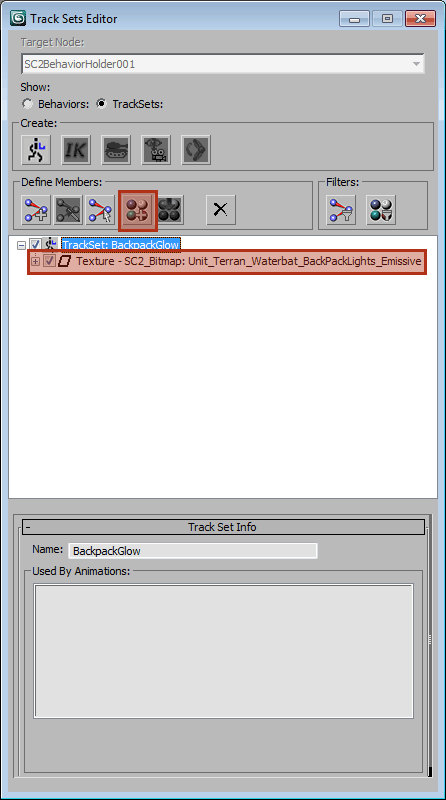 -
Click the '+' button next to the assigned 'Unit_Terran_Waterbat_BackPackLight_Material' texture to reveal the related tracks, then check the 'RGB Multiply' track.
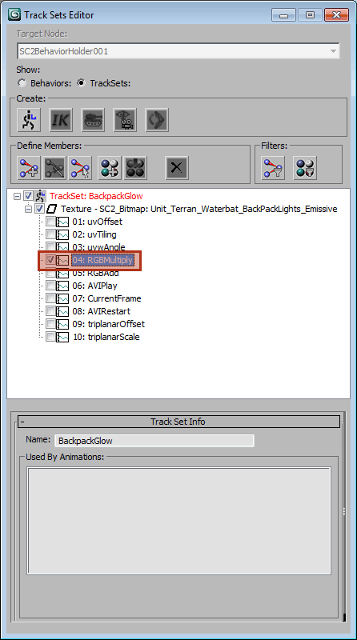
Assigning the Track Set
-
In the Anim Props Floater, with the 'GL_Stand' animation selected, press the Add button on the SubAnim Tracks rollout. Select the 'BackpackGlow' track set created earlier in the pop-up window that appears and then press 'OK'.
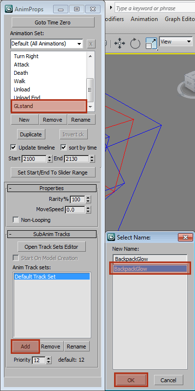 -
We only want 'GL_Stand' to influence tracks in the 'BackpackGlow' track set, but a 'Default Track Set' is still on the list. The 'Default Track Set' represents all tracks not included by user track sets for each animation. Therefore, to exclude all tracks not defined in 'BackpackGlow', select the 'Default Track Set' and press the 'Remove' button. The 'BackpackGlow' track set should be the only one left on the list.
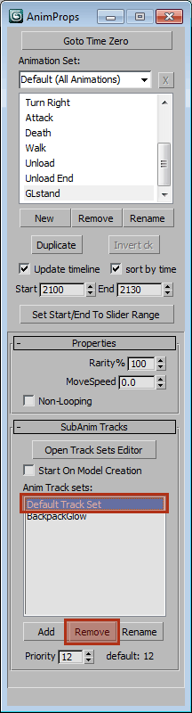 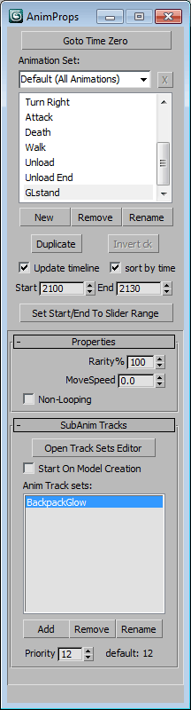'GL_Stand' is now a SplitBody Animation that only plays on the 'BackpackGlow' track set, which is basically only the 'RGB Multiply' track of the 'Unit_Terran_Waterbat_BackPackLights_Emissive' texture.
Preview to Check the Work
-
Use 'SC2ArtTools > Export > Preview' and launch the Cutscene Editor to see the animation. When the Waterbat loads, it should be playing its 'Stand' animation. On top of that, the center lights on his backpack should also be blinking now because of the 'GL_Stand' animation that is constantly playing automatically. Global Loop Animations do not need to be add explicitly added as animation blocks in the Cutscene Editor, they start as soon as a model loads.
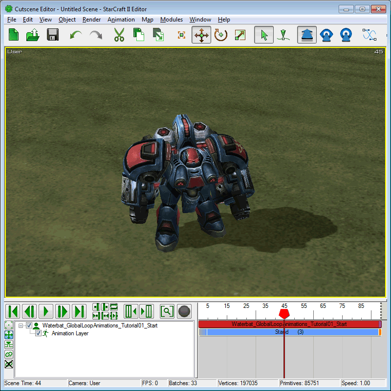 -
To demonstrate how a Global Loop Animation plays uninterruptedly through animation changes, add a 'Walk' animation block after the 'Stand'. The result shows that the light blinks persist with the same interval even during and after transitioning into the 'Walk'.
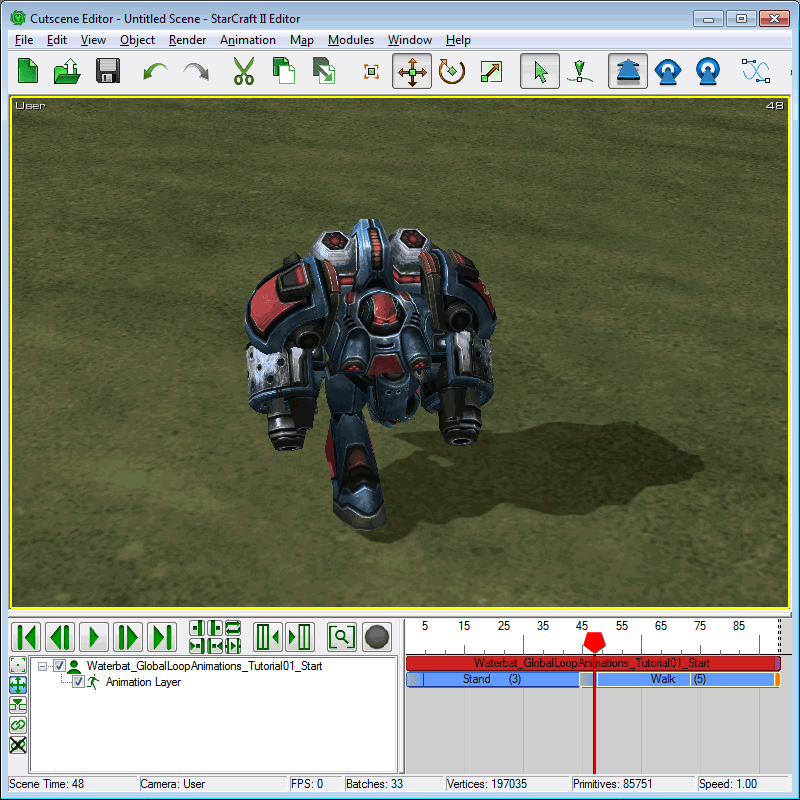